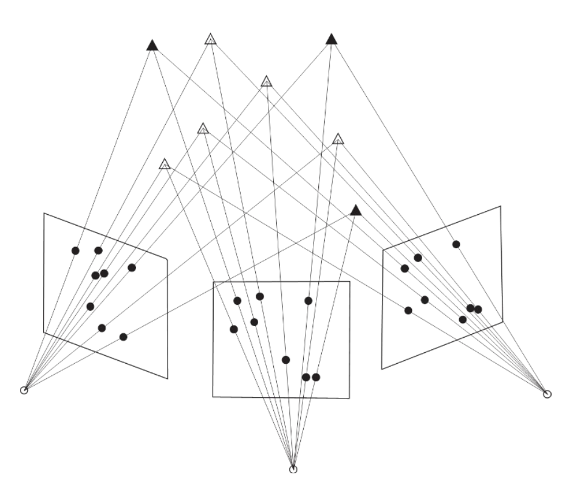

Collinearity Equation
Setup: We have a scene that we see from different perspective (same idea from SfM — let’s say the Colosseum).
I know the distortion, I know the principal point location, camera poses, intrinsic params, etc.
I want to estimate the location of all the points in 3D space in one go.
Collinearity Equation:
Suppose a point with world coordinates () is projected into an image at location with camera coordinates () with the camera centre located at world coordinates . The vector in the camera coordinate system can then be obtained by rotating and scaling the vector in the world coordinate system. Hence,
- is the scale factor reducing to .
The collinearity equations can be used for various problems in computer vision. Multiple points are measured in one or multiple images to set up two collinearity equations for each measured image point.
Bundle Adjustment with calibrated cameras.
The highlighted variables are unknown.

- Bundle adjustment simultaneously addresses the problems of pose estimation and 3D reconstruction. Hence, both the world coordinates of the measured points and the image pose parameters are unknown. The index i enumerates the object points and index j enumerates the images. To obtain redundancy in the equation system, many points have to be measured in multiple images. Every object point measured in n images will add 2n equations to the eq. system, but will also introduce 3 additional unknown parameters to be estimated, i.e. the three world coordinates of the additional object point. (see the example at the end)
If no knowledge is available about the world coordinate system, it will be impossible to estimate the world coordinates of object points. The problem would then be ill-defined and the equation system will have a rank defect of seven(see example at the end again!), corresponding to the seven parameters of the 3D similarity transformation between the network of camera coordinate systems and the world coordinate system. Alternatively, one can solve the singularity by adopting pose parameters for one of the images as well as a distance between two camera locations or between two object points to fix the scale of the world coordinate system.
For self-calibration, we add the intrinsic parameters as unknowns.
TL;DR Bundle Adjustment:
- Obtain approximate values needed for unknown parameters
- Linearize collinearity equations
Least Squares Parameter Estimation
Most observation equations for 3D vision are non-linear and least squares requires linear relation .
So we linearize using Taylor series.
So we solve
And in the end we get
We do Least Squares Estimation until we minimize . The least squares estimate can be obtained with
We need to define the origin of the world!!! (could be the first camera pose).
Error Propagation
Recall simple rules from Linear Algebra
Covariance matrix is symmetric
Everything is simplified when you have the same type of measurements (let’s say camera).
If we over parametrize the system, we get singularity. Even if we have rank efficiency of 7, some values will come out. Make sure the system is not singular (i.e. loses degrees of freedom if a matrix is not invertible or no solution satisfies a equation).
Parameter Estimability:
In case of insufficient measurements or degenerate configurations of the object points, not all parameters may be estimable. Theoretically, this would imply that the so-called normal matrix has a rank defect and cannot be inverted. To check the estimability of the parameters, it is therefore good practice to examine the condition number of the normal matrix . This condition number is the ratio of the largest and smallest eigenvalue of the normal matrix. A very high ratio indicates that the normal matrix is close to being singular.
We compute the covariance between parameters. If it gets too close to 1, it means they are very correlated so we might need to take one of them out.
Check correlation coefficients . The diagonal of contains the variances of the estimated parameters and the off-diagonal elements contain the covariances between the parameters. The correlation between parameters i and j can be calculated as
We need to make sure we have points that make correlation possible.
Example:
Let’s say we have 5 points that can be extracted in 5 different images.
- In total: 5x5x2 camera coordinates/tie point = 50 collinearity equations
- 5 images x 6 pose parameters = 30 pose parameters
- 5 tie points x 3 world coordinates = 15 world coordinates
- 45 unknown parameters
- So we have 50 equations with 45 unknown parameters. Redundant, but possible.
The issue: Even with 50 equations and 45 unknowns (redundancy of 5), the normal equations matrix has rank defect of 7 (explanation above, where the Figure is).
- Bundle adjustment has 7 datum defects corresponding to
- 3 translations (origin of world coordinate system)
- 3 rotations (orientation of world axes)
- 1 scale (overall size of the reconstruction)
Without fixing these, the system is geometrically underconstrained - you can translate, rotate, or scale the entire solution and still satisfy all collinearity equations perfectly.
The solutions my professor suggests:
- Fix one camera pose and one distance - removes 6 DOF (pose) + 1 DOF (scale) = 7 constraints
- Fix coordinates of 3 points - removes 7+ DOF through ground control points
This professor really know his stuff. Vosselman. His career is longer than I have years so figures. He also helped me with SeaClear.
Exercise
Suppose a scene contains 10 landmarks. The world coordinates of 4 (non-coplanar) landmarks are known. The 10 landmarks are all visible in 7 images taken from different positions. Calculate the redundancy of the equation system for the bundle adjustment.
So, we have 10 points. All of them are visible for 7 different POVs. Also, we know the world coordinates of 4/10 ⇒ we don’t know 6/10.
So we have 7 images 10 points 2 camera coordinates = 140 collinearity equations
And we need to compute
- 6 landmarks 3 world coordinates = 18 world coordinates
- 7 images 6 pose parameters = 42 pose parameters
- In total, 60 pose parameters
- We have 140 collinearity equations and 60 unknown parameters ⇒ redundancy of 80.
- The 4 known non-coplanar landmarks provide sufficient constraint to define the datum (world coordinate system reference frame and scale), eliminating the rank defect of 7.
Another formulation that might come at the exam:
“Suppose a scene contains 10 landmarks. The 10 landmarks are all visible in 7 images taken from different positions. To eliminate the datum defect, the pose of one camera is adopted as known, and the distance between two landmarks is also known. Calculate the redundancy of the equation system for the bundle adjustment.”
is equivalent to
“Suppose a scene contains 10 landmarks visible in 7 images taken from different positions. For bundle adjustment, assume one camera pose is fixed and one distance measurement between two object points is available to define the scale. Calculate the redundancy.”
Solution in this case:
7 images 10 points 2 camera coordinates = 140 collinearity equations
We have 7 images in total, but 1 camera pose is fixed (known). Therefore, we estimate then 6 images 6 parameters per pose = 36 pose parameters.
10 landmarks 3 world coordinates = 30 world coordinates
Distance constraint: The known distance provides 1 additional constraint
Total parameters before constraint: 36 + 30 = 66 parameters
With distance constraint, effective unknowns: 66 - 1 = 65 parameters.
Redundancy = 140 - 65 = 75